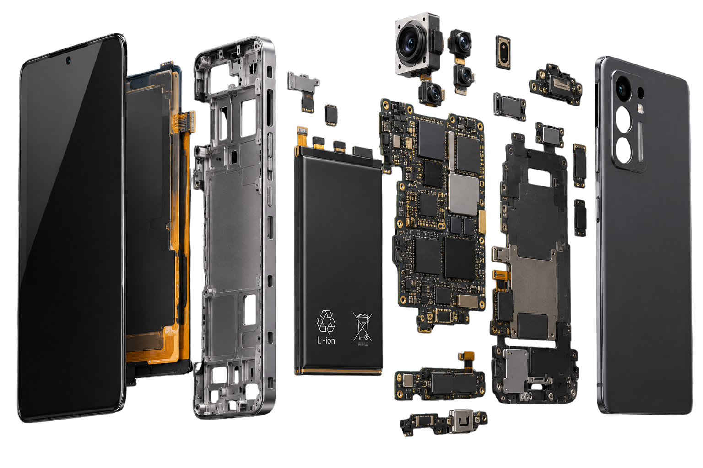
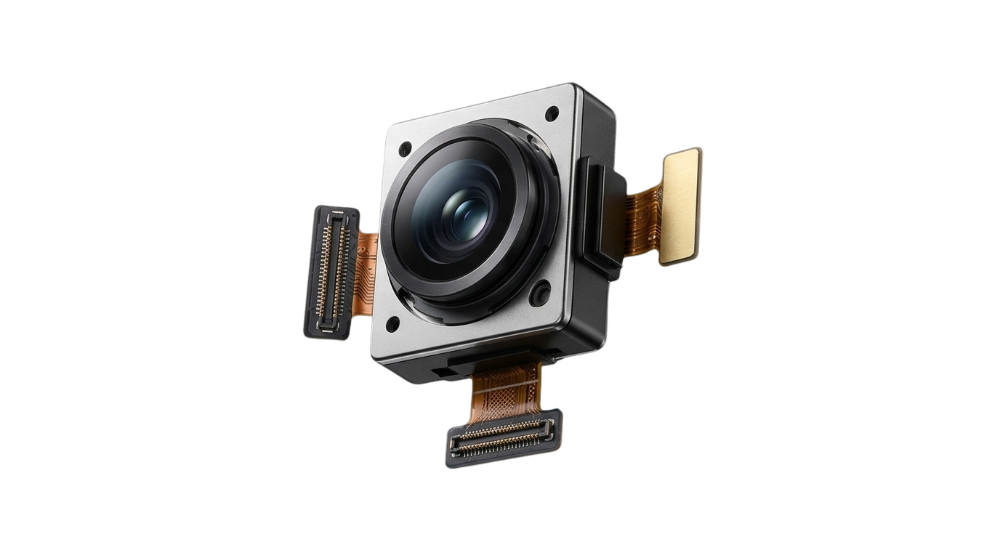
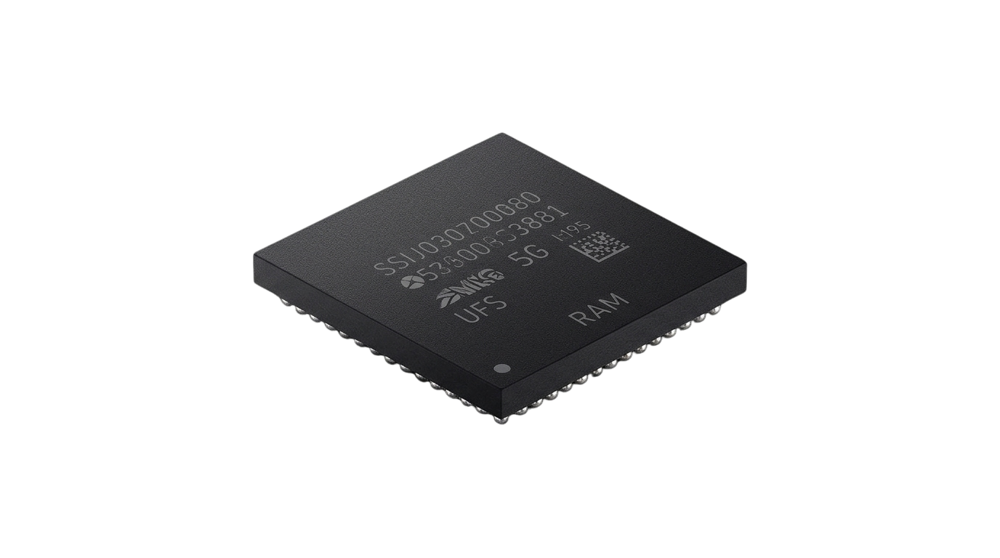
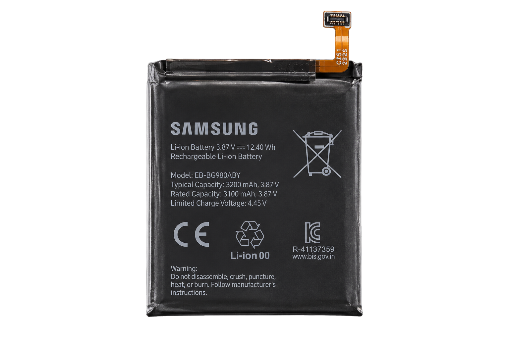

Por dentro
do celular
Cada peça faz uma coisa simples. Juntas, formam um computador que cabe no bolso. Aperte o play e deixe a página guiar você.
Tudo segue o mesmo caminho
Entrada: o dedo toca o vidro ou a luz entra pela câmera. Sensores viram sinais elétricos.
Energia: a bateria entrega corrente estável para todos os componentes.
Processamento: o chip lê zeros e uns, executa o app e decide o que fazer.
Saída: a tela acende milhões de pontos de luz e você vê o resultado.
A tela: onde você vê e toca

Uma pilha de camadas com menos de 1 mm: o vidro protege, a grade de toque sente o dedo e o painel OLED acende cada pixel por conta própria.
A câmera: luz que vira dado

Quando um fóton atinge o silício do sensor, libera um elétron (efeito fotoelétrico). Mais luz, mais elétrons guardados naquele pixel.
As lentes dobram a luz e formam a imagem nítida sobre o sensor.
Filtro Bayer: cada pixel mede só vermelho, verde ou azul.
A carga vira tensão e um conversor a transforma em número.
O processador de imagem junta tudo, tira ruído e reconstrói as cores.
O chip: cérebro e memória

O transistor é um interruptor controlado por eletricidade: ligado vale 1, desligado vale 0. Bilhões deles formam portas lógicas que somam, comparam e decidem.
Executa as instruções dos apps, passo a passo.
Faz milhares de contas em paralelo para desenhar gráficos.
Acelera inteligência artificial: rosto, voz e fotos.
Rápida e volátil: cada bit é carga num capacitor. Sem energia, apaga.
Memória flash: prende cargas em células e guarda seus arquivos desligado.
A bateria: energia guardada em química

Dois eletrodos separados por um eletrólito. Os íons de lítio vão e voltam; os elétrons são obrigados a passar pelo circuito, e essa passagem é a corrente.
O que mais existe lá dentro
Trilhas de cobre ligam todos os chips entre si.
Dá rigidez, espalha o calor e nas laterais costuma ser antena.
Uma bobina vibra num campo magnético e empurra o ar. O microfone faz o inverso.
Acelerômetro e giroscópio medem deslocamento e rotação com silício microscópico.
Wi-Fi, GPS e rede móvel convertem sinal elétrico em ondas de rádio.
Protege tudo e deixa passar os sinais de rádio.
por ouvir
Luz vira elétrons, toque vira campo elétrico, tudo vira zeros e uns, e a bateria mantém a engrenagem girando. Um supercomputador de bolso, feito de peças simples.